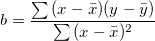

/math-6fbdf291cda891b99cf211417ad1df18.png "\bar{x}") and
and /math-bacfc7141fdfd692244b6c50891d1f7b.png "\bar{y}") are the means of x and y.
are the means of x and y.
Minimum Origin Version Required: 2019 SR0
This function performs linear regression on a group of XY data to calculate or predict Y at the given X value. The Y value is predicted as :
where,

and are the means of x and y.
double Forecast( double x, vector vx, vector vy)
x
vx
vy
Return the calculated or predicted y coordinate at specified x coordinate.
newbook; worksheet -a 2; col(a)={0:0.5:10}; col(b)=10*col(a)-20*rnd(); col(c)={20:1:25}; col(d)=forecast(col(c),col(a),col(b));